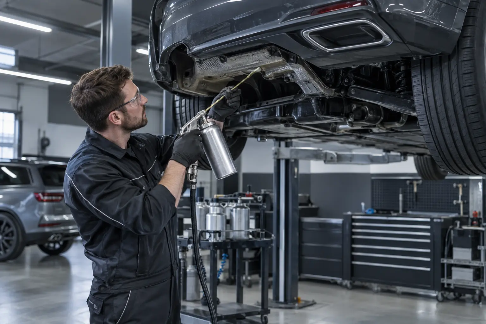
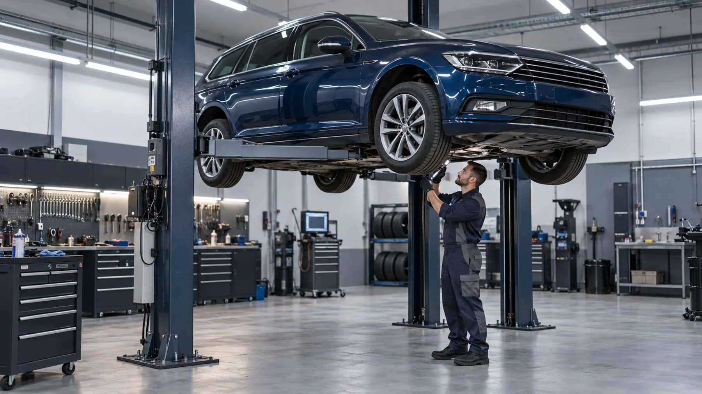

Полный комплекс услуг
Всё для вашего автомобиля.
Кузов, покраска, ремонт, диагностика, обслуживание и уход — профессионально и в одном месте.
Ремонт после ДТП и кузов

Ремонт после ДТП
От небольшой аварии до серьёзного повреждения кузова: профессиональная диагностика, рихтовка и ремонт.
Подробнее →Ремонт после ДТП и кузовКузовные работы
Точные кузовные работы для легковых автомобилей, фургонов и корпоративного транспорта.
Подробнее →Ремонт после ДТП и кузов
Кузовная техника и стапель
Восстановление геометрии кузова и профессиональные стапельные работы.
Подробнее →Ремонт после ДТП и кузовУдаление вмятин
Удаление вмятин после профессиональной оценки подходящего метода ремонта.
Подробнее →Ремонт после ДТП и кузовРемонт после града
Комплексное устранение многочисленных вмятин после града.
Подробнее →Ремонт после ДТП и кузовРемонт парковочных повреждений
Профессиональный ремонт царапин, вмятин и бамперов после парковочного повреждения.
Подробнее →Ремонт после ДТП и кузовРемонт пластика и бамперов
Проверка, восстановление или замена повреждённых пластиковых деталей и бамперов.
Подробнее →Ремонт после ДТП и кузов
Удаление ржавчины
Профессиональное удаление коррозии и долговременная защита обработанных участков.
Подробнее →Ремонт после ДТП и кузовКонсервация скрытых полостей
Долговременная защита скрытых полостей кузова от влаги и коррозии.
Подробнее →Ремонт после ДТП и кузовЗащита днища
Проверка и защита днища от влаги, соли и механических повреждений.
Подробнее →Ремонт после ДТП и кузовРеставрация классических автомобилей
Тщательные кузовные и покрасочные работы для классических автомобилей.
Подробнее →Покраска и уход

Покраска автомобиля
Профессиональная покраска автомобиля с тщательной подготовкой и точным подбором цвета.
Подробнее →Покраска и уходЛокальная покраска деталей
Точная покраска отдельных кузовных деталей с подбором цвета.
Подробнее →Покраска и уходПолная покраска автомобиля
Полная профессиональная покраска автомобиля с тщательной подготовкой поверхности.
Подробнее →Покраска и уход
Локальный ремонт Smart Repair
Экономичный локальный ремонт небольших повреждений после проверки их размера и расположения.
Подробнее →Покраска и уходУдаление царапин
От полировки до покраски: подходящий метод выбирается по глубине царапины.
Подробнее →Покраска и уходПолировка и восстановление лака
Профессиональная полировка для блеска, глубины цвета и ухоженного вида автомобиля.
Подробнее →Покраска и уходЭффектная покраска и аэрография
Индивидуальные цвета, эффекты и аэрография по согласованному проекту.
Подробнее →Покраска и уходОклейка автомобиля плёнкой
Частичная и полная оклейка для дизайна, рекламы или дополнительной защиты лака.
Подробнее →Покраска и уход
Покраска дисков
Профессиональная покраска дисков в выбранный цвет.
Подробнее →Автосервис и техника

Техническое обслуживание
Регулярное техническое обслуживание для безопасности и сохранения стоимости автомобиля.
Подробнее →Автосервис и техника
Диагностика автомобиля
Системная диагностика неисправностей современным оборудованием.
Подробнее →Автосервис и техникаЭлектроника двигателя
Проверка и профессиональный ремонт электронных систем двигателя и автомобиля.
Подробнее →Автосервис и техника
Замена масла и фильтров
Профессиональная замена моторного масла и фильтров.
Подробнее →Автосервис и техника
Обслуживание тормозов
Проверка тормозной системы и профессиональная замена изношенных деталей.
Подробнее →Автосервис и техникаРемонт выхлопной системы
Диагностика и ремонт повреждений выхлопной системы.
Подробнее →Автосервис и техникаПодвеска и амортизаторы
Диагностика и ремонт подвески и амортизаторов.
Подробнее →Автосервис и техникаРемонт сцепления
Диагностика проблем со сцеплением и определение необходимого ремонта.
Подробнее →Автосервис и техникаОбслуживание коробки передач
Диагностика проблем коробки передач и дальнейшие работы по согласованию.
Подробнее →Автосервис и техникаРемонт двигателя
Системная диагностика двигателя и согласование целесообразного ремонта.
Подробнее →Автосервис и техникаРемень и цепь ГРМ
Проверка и обслуживание ремня или цепи ГРМ по требованиям производителя.
Подробнее →Автосервис и техникаОбслуживание аккумулятора
Проверка аккумулятора и системы зарядки, подбор и замена при необходимости.
Подробнее →Автосервис и техника
Обслуживание кондиционера
Проверка, обслуживание и заправка автомобильного кондиционера.
Подробнее →Автосервис и техника
Техосмотр HU/AU
Подготовка автомобиля и организация технического осмотра HU/AU.
Подробнее →Автосервис и техника
Развал-схождение
Точный развал-схождение для устойчивого движения и равномерного износа шин.
Подробнее →Шины, диски и стёкла
Шиномонтаж
Профессиональная установка, замена и проверка шин.
Подробнее →Шины, диски и стёклаБалансировка колёс
Точная балансировка уменьшает вибрации и неравномерный износ шин.
Подробнее →Шины, диски и стёклаСезонное хранение колёс
Удобное сезонное хранение колёс.
Подробнее →Шины, диски и стёклаРемонт дисков
Проверка и профессиональное восстановление внешних повреждений дисков.
Подробнее →Шины, диски и стёкла
Ремонт автостёкол
Ремонт сколов, если их размер и расположение позволяют безопасное восстановление.
Подробнее →Шины, диски и стёклаЗамена лобового стекла
Профессиональная замена повреждённого лобового стекла.
Подробнее →Салон и комфорт
Детейлинг автомобиля
Комплексный уход за салоном и кузовом автомобиля.
Подробнее →Салон и комфорт
Химчистка салона
Тщательная и бережная чистка сидений и поверхностей салона.
Подробнее →Салон и комфортРемонт сидений и обивки
Ремонт или замена повреждённой обивки и элементов автомобильных сидений после осмотра.
Подробнее →Салон и комфортРемонт и уход за кожей
Чистка, уход и восстановление изношенных кожаных поверхностей.
Подробнее →Салон и комфортРемонт потолка автомобиля
Ремонт или замена провисшего и повреждённого потолка автомобиля.
Подробнее →Салон и комфортУдаление запахов
Устранение источников неприятного запаха и специальная обработка салона.
Подробнее →Мобильность и бизнес-клиенты

Эвакуатор
Организация транспортировки неисправного автомобиля по запросу.
Подробнее →Мобильность и бизнес-клиентыДоставка автомобиля
По желанию заберём автомобиль и вернём после завершения ремонта.
Подробнее →Мобильность и бизнес-клиентыПодменный автомобиль
Подменный автомобиль на время ремонта по наличию и предварительному согласованию.
Подробнее →Мобильность и бизнес-клиентыПомощь со страховым случаем
Помощь с документами и согласованием ремонта страхового случая.
Подробнее →Мобильность и бизнес-клиентыОбслуживание автопарков
Плановое обслуживание корпоративных автомобилей и автопарков.
Подробнее →Специальные проекты
Не нашли нужную услугу?
Опишите нам задачу. Мы проверим возможности и предложим подходящее решение.
Отправить запрос ↗